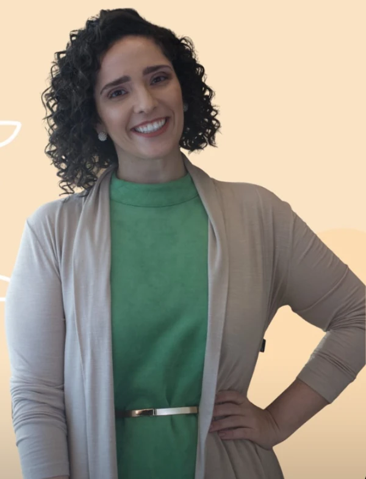
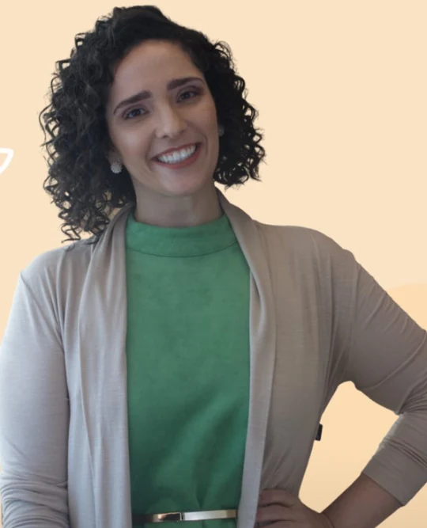

Primeiros cuidados
Orientações sobre os primeiros meses de vida, alimentação e rotina do bebê.
Cuidado integral e orientação para acompanhar cada etapa do desenvolvimento infantil, respeitando as necessidades de cada criança.

A consulta pediátrica é um espaço de acompanhamento, prevenção e esclarecimento das dúvidas das famílias.
Orientações sobre os primeiros meses de vida, alimentação e rotina do bebê.
Acompanhamento das diferentes etapas da infância e da saúde infantil.
Orientação e acolhimento para as famílias durante a amamentação.
Avaliação individual das necessidades nutricionais e de suplementação.
Orientações para o cotidiano das famílias e acompanhamento de acordo com a avaliação médica.

Dra. Aline Galy é médica pediatra em Salvador, com atuação voltada ao acompanhamento da saúde infantil.
Graduada em Medicina pela UniFTC, com residência em Pediatria e pós-graduação em Homeopatia pela Escola Bahiana de Medicina e Saúde Pública.
Em seu perfil profissional, compartilha orientações sobre amamentação, suplementação infantil e outros temas relacionados à saúde e ao desenvolvimento das crianças.
Conheça seu trabalhoUm espaço para compreender as necessidades da criança e esclarecer dúvidas da família.
Histórico de saúde, rotina e dúvidas da família.
Exame e investigação conforme as necessidades da criança.
Orientações e acompanhamento conforme a avaliação.
Escolha a unidade de sua preferência e entre em contato com a equipe para consultar horários.
Av. Luís Viana, 6462, Wall Street, torre B, sala 424 — Salvador
(71) 99911-2412Av. Luís Viana, 7416, Alpha Medical Center, salas 715/716 — Alphaville I
(71) 99650-5025Rua das Hortênsias, 398, sala 02 — Pituba, Salvador
(71) 99141-5798Acompanhe os conteúdos sobre pediatria, amamentação, prevenção e desenvolvimento infantil.
Informações para facilitar o primeiro contato.
Ver contatos das unidadesEscolha uma das clínicas na seção de consultórios e entre em contato com a equipe.
Os locais divulgados são Ser Criança Clínica, Espaço Semear Bahia e Canto Encanto, em Salvador.
Confirme as modalidades de atendimento, convênios e valores diretamente com a unidade escolhida.
Se disponíveis, leve a caderneta de saúde, exames anteriores e informações sobre medicamentos utilizados.
Escolha a unidade de atendimento e consulte os horários disponíveis com a equipe.
Escolher unidade